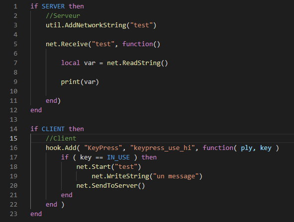

Dans Garry's Mod, il est important de savoir faire des liens entre le côté Client et Serveur, par exemple pour qu'une interface (Client) ait des repercutions avec les autres joueurs sur le serveur (Server)
Pour ce faire on utilise la librairie Net
La première étape conciste à envoyer un message et éventuellement des données au serveur depuis le Client
Dans cet exemple l'instruction net.Start("Test") permet de créer un message net. Ensuite on met à la suite net.WriteString("un message") pour définir une donnée (ici une valeur string) que l'on veut envoyer au serveur. Pour finir, l'instruction net.SendToServer() permet simplement d'envoyer le message avec ses données au serveur.
Attention ! Il est obligatoire de définir dans le côté Serveur "l'existance" du message "test" avec l'instruction util.AddNetworkString("test").
Ensuite, avec net.Receive("test", function() ... on définir une fonction qui sera executée lorsque le serveru recevera le message.
Avec local var = net.ReadString() on définit la variable "var" par la donnée envoyer avec le client ("un message")
Puis on print la valeur. Donc si la valeur sera affichée dans la console du serveur.
Cependent les deux scripts ci-dessus ne marchent pas à eux seuls, voici un script complet :
Cependent je n'ai pas pu vous parler des hooks, je vous invite donc à consulter cette page du Wiki afin d'apprendre à utiliser les hooks.
Pour pus d'inforations, consultez le Wiki de Garry's Mod, vous y trouverez toutes les inofrmations sur le gLua (fonctions, variable, messages nets, interfaces, etc ...).